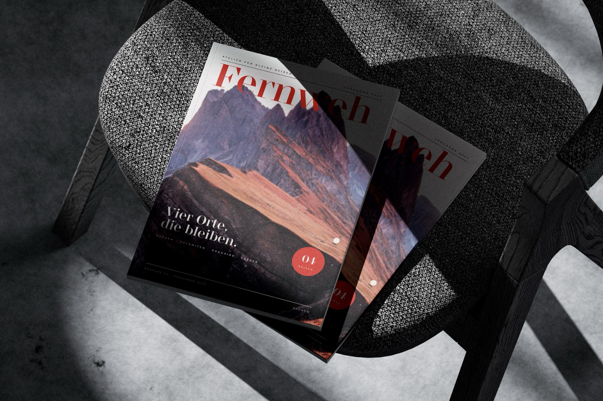
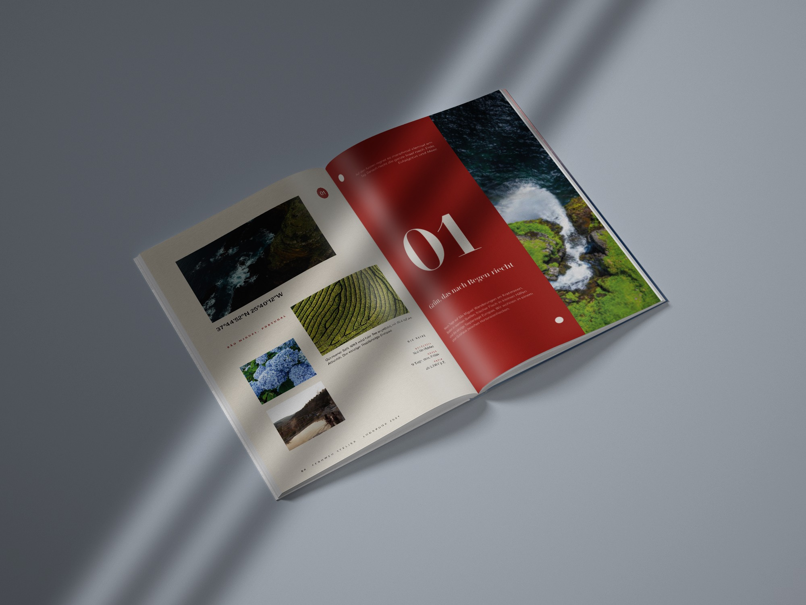
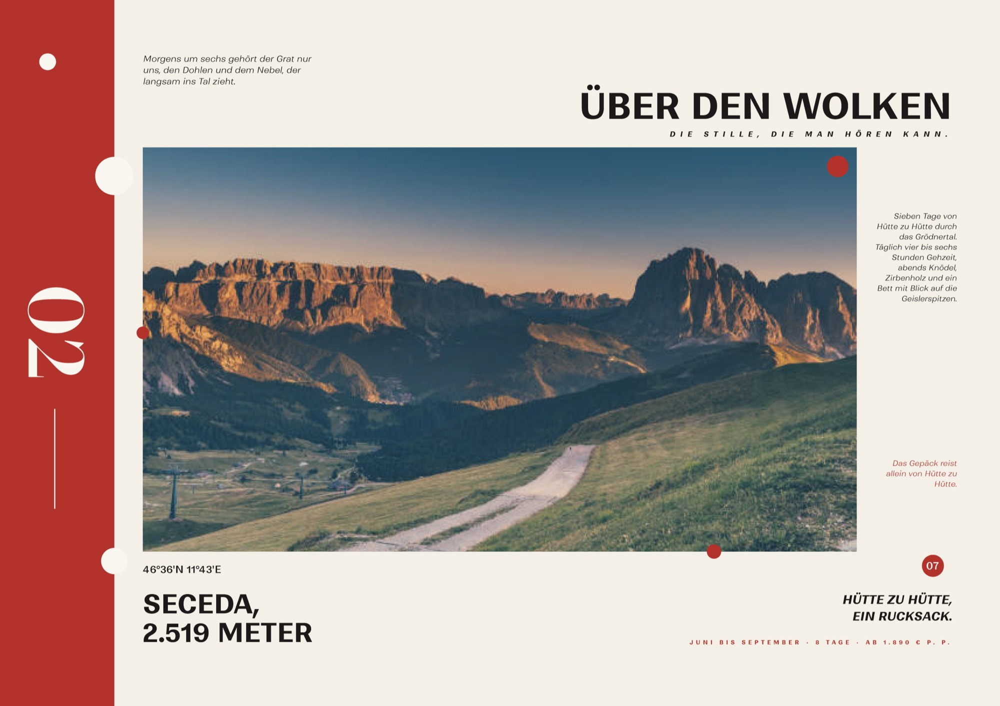
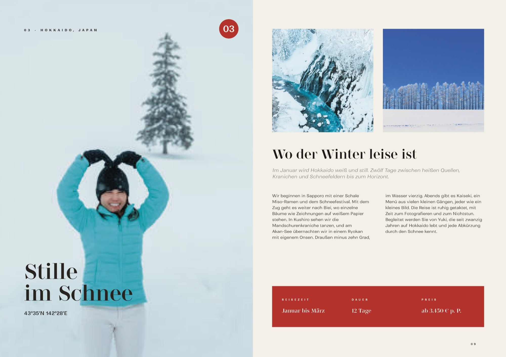
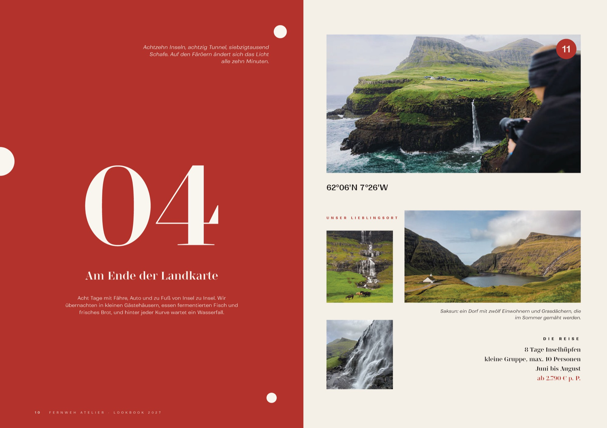
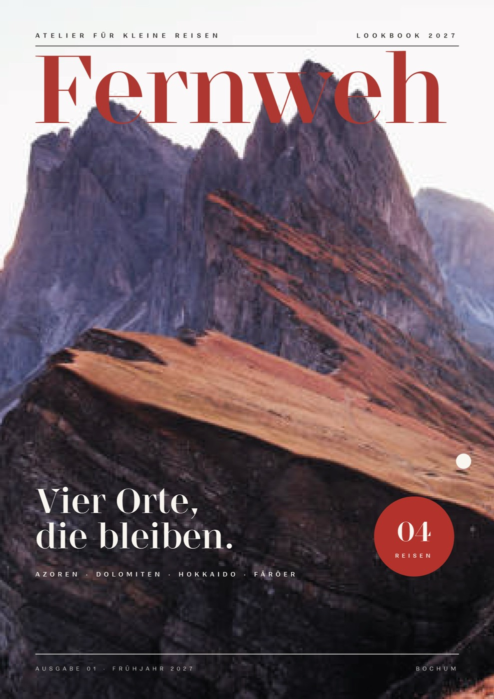
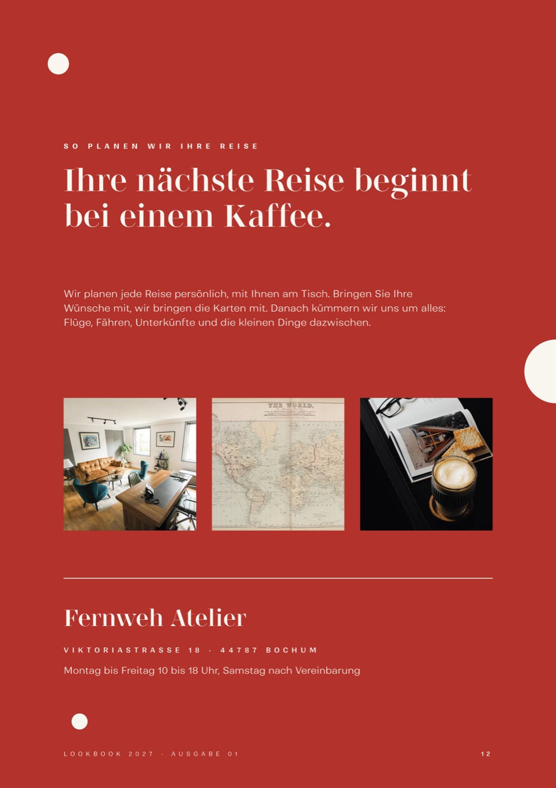
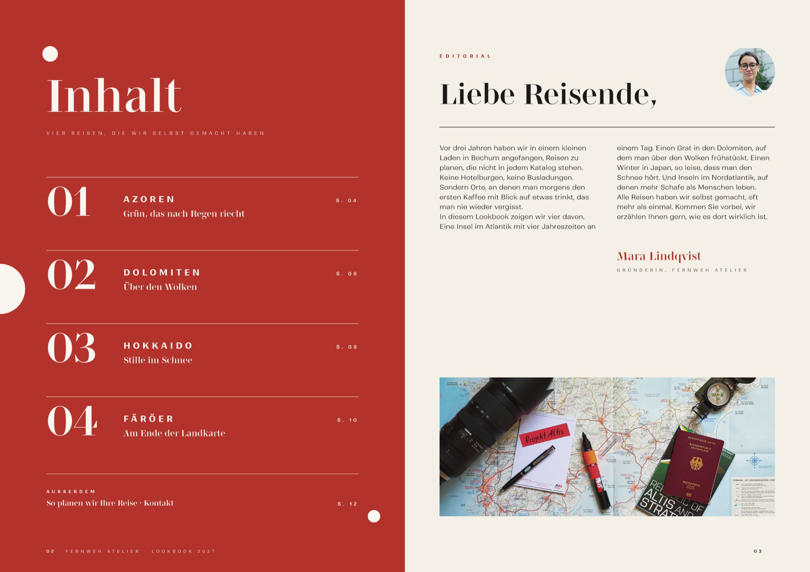
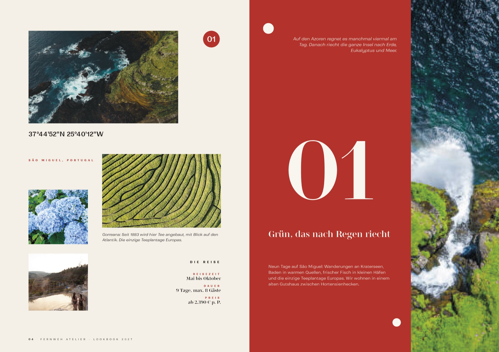

Fernweh Atelier
- Client
- Fernweh Atelier travel agency (concept)
- Year
- 2026
- Scope
- Lookbook, Editorial design
A lookbook for a small travel agency in Bochum that plans trips to quiet places. It reads like an independent travel magazine: huge serif numbers, coordinates, signal red, white dots and full-bleed photography. Twelve pages, one spread per destination. Photos are stock images used for presentation.



From mood board to magazine
Four destinations, one system: number, coordinates, story and travel facts.
Concept
The agency sells feelings, not hotels. So the lookbook should feel like a film still: lots of paper white, one loud red, bold sans headlines against an elegant serif.
- Numbers & headlines
- Stardom
- Text, captions
- Ranade
Spreads
Each trip gets its own spread with a big number, GPS coordinates, a short story and a fact box with season, length and price. Red pages and photo pages alternate, so the rhythm never gets boring.


Front & back
Contents on a red page, a letter from the founder and a back cover that invites you in for a coffee. A4, saddle-stitched, 12 pages.



